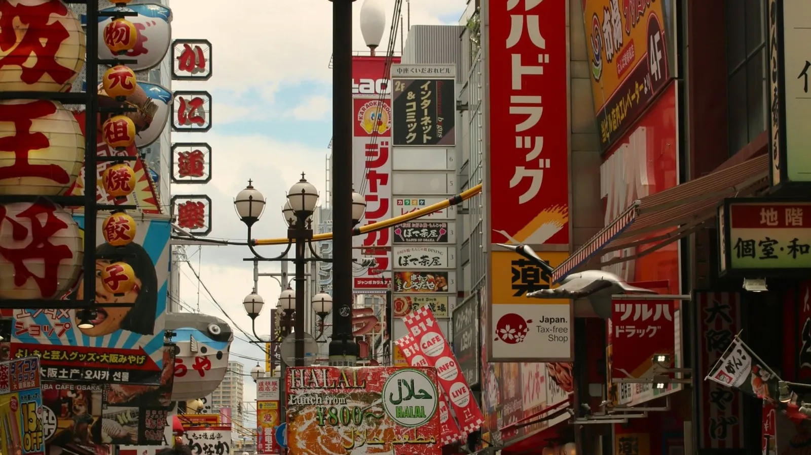

The short answer
Eating is one of the best reasons to visit Japan, and it does not have to be expensive. Start with ramen, sushi, tempura and yakitori, try the regional specialities (okonomiyaki and takoyaki in Osaka, matcha sweets in Kyoto), and don't skip the convenience stores. Most restaurants specialise in one dish, so choose the place by what you want to eat.
12 dishes to try in Japan
1. 🍣 Sushi
Raw fish on vinegared rice. Conveyor-belt sushi (kaiten-zushi) is cheap and fun, from about ¥120–500 a plate; a counter omakase is a splurge. Dip the fish side, not the rice, in soy sauce.
2. 🍜 Ramen
Every region has its style: rich pork-bone tonkotsu in Fukuoka, miso in Sapporo, soy-based shoyu in Tokyo. A bowl costs about ¥900–1,500. Slurping is normal and polite.
3. 🍤 Tempura
Seafood and vegetables in a light, crisp batter, best eaten straight from the fryer at a counter. Try a tendon (tempura on rice) for a cheap lunch.
4. 🥩 Wagyu and Kobe beef
Marbled Japanese beef, grilled at the table (yakiniku) or as a steak. Kobe is the famous brand, but A5 wagyu from other regions is just as good and often cheaper. Lunch sets cost much less than dinner.
5. 🍢 Yakitori
Chicken skewers grilled over charcoal, from thigh and spring onion to more adventurous cuts. Perfect with a beer in an izakaya or under the railway tracks in Tokyo.
6. 🥞 Okonomiyaki
A savoury pancake of cabbage, batter and pork or seafood, topped with sauce and mayonnaise. Osaka style is mixed; Hiroshima style is layered with noodles.
7. 🐙 Takoyaki
Hot balls of batter with octopus inside, Osaka's favourite street food. Let them cool: the inside is very hot.
8. 🍲 Udon and soba
Thick wheat udon and thin buckwheat soba noodles, hot in broth or cold with a dipping sauce. Standing soba bars in stations are among the cheapest meals in Japan.
9. 🐖 Tonkatsu
A thick breaded pork cutlet, served with shredded cabbage, rice and miso soup. Refills of rice and cabbage are often free.
10. 🍙 Onigiri and konbini food
Rice balls, sandwiches, fried chicken and hot dishes from convenience stores (7-Eleven, Lawson, FamilyMart): fresh, cheap and surprisingly good for breakfast.
11. 🍱 Bento and ekiben
Boxed meals; the ekiben sold in train stations are made to be eaten on the Shinkansen, a small pleasure of every journey.
12. 🍵 Matcha and wagashi
Powdered green tea and traditional sweets made with rice and red beans. Try them in Kyoto, with a tea ceremony or simply in a teahouse.
Where to eat
- Izakaya: Japanese pubs with many small plates to share, ideal for trying a bit of everything in the evening.
- Shokudō and teishoku restaurants: simple places serving set meals (main dish, rice, miso soup, pickles), great value at lunch.
- Department store food halls (depachika): the basement floors of big stores, full of ready meals, bento and sweets; discounts in the last hour before closing.
- Food streets and markets: Dotonbori in Osaka, Nishiki Market in Kyoto, the outer market of Tsukiji in Tokyo.
- Convenience stores: open 24/7, with surprisingly good food and coffee.
How ordering works
- Ticket machines: in many ramen and fast-food places you buy a ticket at a machine by the door, then hand it to the staff. Many machines now have English buttons or pictures.
- Tablets and QR codes: more and more restaurants let you order on a tablet or your phone.
- Water and tea are free, often self-service.
- Pay at the till by the exit, not at the table. Cards and IC cards are widely accepted, but small places may be cash only.
- No tipping. In izakaya a small otōshi starter may be served and charged automatically: it is normal.
To read menus and ask questions, see our English menu guide and restaurant phrases; for table manners, Japanese etiquette.
What food costs in Japan
| What | Typical price |
|---|---|
| Konbini breakfast (onigiri, coffee) | ¥400–700 |
| Ramen, udon, curry rice, gyūdon | ¥500–1,500 |
| Set lunch (teishoku) | ¥900–1,800 |
| Izakaya dinner with drinks | ¥3,000–5,000 per person |
| Wagyu yakiniku dinner | ¥6,000–15,000+ per person |
| Kaiseki (multi-course) dinner | ¥10,000–30,000+ |
Indicative prices in November 2026. For a full budget, read how much a trip to Japan costs.
Vegetarians and allergies
Japan can be hard for vegetarians: fish stock (dashi) is in many soups and sauces, even in dishes that look vegetable-only. Look for shōjin ryōri (Buddhist temple cuisine, fully plant-based, especially in Kyoto), dedicated vegan restaurants and dishes such as vegetable tempura or inari sushi, and ask clearly. With a serious allergy, carry a written card in Japanese that explains it: staff take it seriously when they understand it.
Find the best food near you.
687 Japan shows restaurants near you with Tabelog ratings, English-menu tips and phrases ready to show the staff, plus taxi directions in Japanese. If plans change, NOW rebuilds the rest of the day.
Sources
- Japan National Tourism Organization – Japanese food
- JNTO – Dining etiquette
- Kobe Beef Marketing & Distribution Promotion Association
- Osaka Convention & Tourism Bureau – Osaka food
Checked against these official sites in November 2026. Prices and rules can change: always confirm before you travel.